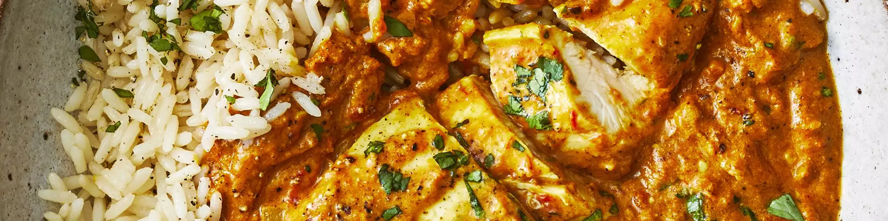

Home

Butter Chicken Curry
Butter chicken is one of my favorite Indian dishes. It's easy to prep
the slow cooker in the morning to come home to the wonderful aroma of warm Indian spices...
I love it! Serve with basmati rice and warm naan bread.
Ingredient:
- 2 tablespoons butter
- 4 large skinless, boneless chicken thighs, cut into bite-sized pieces
- 2 teaspoons curry powder
- salt to taste
Recipes:
- Heat butter and vegetable oil in a large skillet over medium heat. Stir in chicken, onion, and garlic.
- Pour mixture into a slow cooker.
- Cook on High for 4 to 6 hours (or on Low for 6 to 8 hours) until chicken is tender.